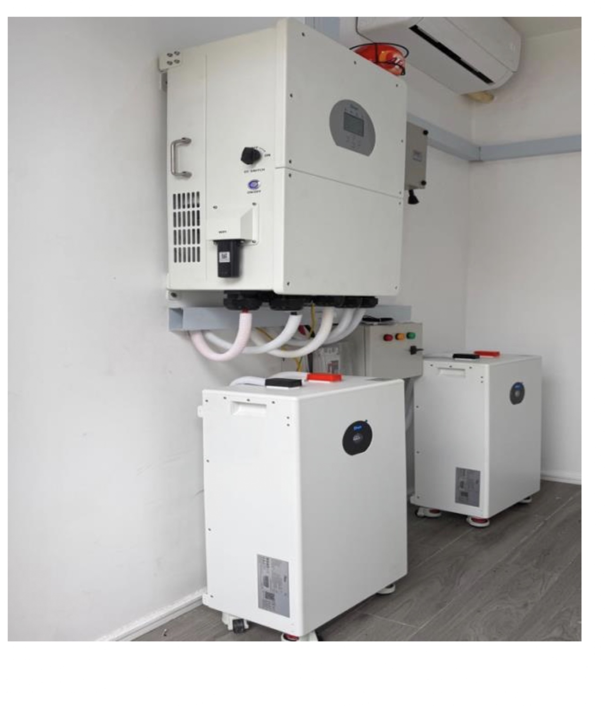
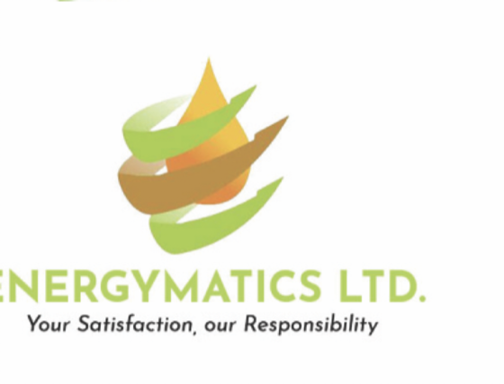
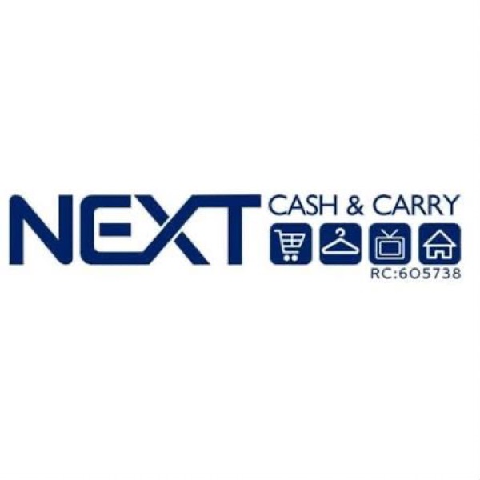

Solar installation projects & case studies in Nigeria
Residential, commercial, industrial and infrastructure solar installations, with the system specification, the loads carried and the outcome for each customer.
Quick answer
What kinds of solar projects has Solar World Electric completed? We have powered over 60,000
homes, offices, hotels, businesses and communities across Nigeria since 2015, in four categories:
residential (homeowners, estates, duplexes, apartments and family homes), commercial
(offices, hotels, schools, hospitals, shopping facilities, restaurants, warehouses and retail),
industrial (factories, manufacturing and processing facilities) and energy infrastructure
(solar streetlights, community projects, solar pumping and EV charging). Systems range from 5 kVA to
125 kW.
Project index
Browse by category
Filter the index, then scroll for the full write-up of each installation, what the customer needed,
what we recommended and installed, and what it achieved.

Residential
16 kW Residential Solar Installation for a Two-Bedroom Airbnb
Airbnb / Short-stay accommodation
An Airbnb operator needed power that keeps guests comfortable through every outage, without generator noise. We sized a 16 kW system around the property's three air conditioners and everyday loads.
20 kW Residential Solar & Battery Installation for a High-Consumption Home
Large family home
Five air conditioners and a household about to get busier. The family wanted a permanent energy solution, not another backup box, so we sized for the load after sunset rather than the load on paper.
30 kW High-Voltage Solar & Battery System for a Shopping Complex
Shopping facilityM.I Ahmad Plaza, Wuse 2, Abuja
Multiple businesses under one roof, each losing money the moment the lights go out. A high-voltage system now sits between grid failure and the generator.
80 kW Solar & Battery System for a Finance Company
The Brook Finance Company LimitedOfficeBrook Finance, Lekki, Lagos
A finance company that runs the numbers for a living looked at what generator fuel was actually costing, and moved 169 kWh of its energy infrastructure under its own control.
ENERGYMATICS LTD.Fuel retail / EnergyENERGYMATICS Filling Station, Port Harcourt
A business built on selling fuel realised it was spending heavily on fuel to make its own electricity. It started smaller and grew the system to 100 kW.
315 kVA Solar & Battery System for Garden City Hotel, Port Harcourt
Garden City HotelHotelPort Harcourt, Rivers State
Our largest hospitality installation: 480 kWh of storage behind a 315 kVA system, sized so guests never have to know what is happening behind the scenes.
8 kW (10 kVA) Home Solar & Inverter Installation in Port Harcourt
Family homePort Harcourt, Rivers State
A family home that wanted to retire the generator entirely. The 8 kW package carries lighting, refrigeration, entertainment and two air conditioners around the clock.
10 kW (12.5 kVA) Duplex Solar & Inverter Installation in Abuja
DuplexAbuja, FCT
A duplex with three air conditioners, two fridges and two freezers needed a system that could hold overnight load without dropping. 16 kWh of lithium storage does it.
5 kW (5 kVA) Apartment Solar & Inverter Installation
ApartmentAbuja, FCT
The entry point into full solar for an apartment: lighting, entertainment, refrigeration and two 1 HP air conditioners, with no generator in the picture.
30 kVA Home Solar / Inverter Installation in Port Harcourt
Family homePort Harcourt, Rivers State
The largest of our residential builds: 48 panels, 70 kWh of lithium storage and enough headroom for six air conditioners plus a full compound of lighting.
Homeowners, estates, duplexes, apartments and family homes.
HomeownerEstateDuplexApartmentFamily home
Residential · Airbnb / Short-stay accommodation
16 kW Residential Solar Installation for a Two-Bedroom Airbnb
An Airbnb operator needed power that keeps guests comfortable through every outage, without generator noise. We sized a 16 kW system around the property's three air conditioners and everyday loads.
System
16 kW inverter
Battery storage
2 x 16 kWh lithium
Solar panels
20 x 620 W
Property
Two-bedroom apartment
Primary loads: 3 air conditioners (two 1.5 HP, one 3 HP), refrigeration, television, lighting and other household appliances
The Challenge
For an Airbnb operator, electricity is not simply a household convenience. It is part of the customer experience.
Guests expect a property advertised as comfortable to remain comfortable when the public power supply goes off. Air conditioning, refrigeration, lighting, entertainment and other essential appliances need to remain available without the constant sound and inconvenience associated with a generator.
The owner of this two-bedroom Airbnb wanted a reliable power solution but was faced with a more important question: who could they trust to design a system that would actually match the property's requirements?
Rather than purchasing an inverter based on its advertised capacity alone, the customer approached Solar World to determine what system would properly support the apartment's intended loads.
The property had three air conditioners: two 1.5 HP AC units and one 3 HP AC unit. It also needed to accommodate everyday loads such as lighting, television, refrigeration, microwave, washing machine and other household appliances.
Our Recommendation
After considering the property's requirements, Solar World recommended a 16 kW inverter system paired with two 16 kWh lithium batteries and 20 solar panels.
The objective was not simply to provide backup electricity. The objective was to give the property a dependable energy system capable of supporting the customer's Airbnb operations and maintaining a comfortable environment for guests.
What We Installed
16 kW inverter
2 x 16 kWh lithium batteries
20 units of 620 W solar panels
Complete installation and system configuration
The Result
The system has been performing according to the property's present energy requirements, with the customer reporting that it has not disappointed them since installation.
One of the biggest benefits for the property is the experience itself. There is no generator noise disturbing guests. There is no need to interrupt the atmosphere of the property every time the grid supply goes down. The customer also has a system with enough capacity for the loads they currently need without immediately having to pursue another upgrade.
Why This Project Matters
This installation demonstrates an important principle in residential solar: the right solar system is designed around the customer's actual lifestyle and energy requirements.
For short-stay apartments, Airbnbs and serviced residences, reliable electricity directly affects the customer experience.
Customer experience
“The biggest thing for me was knowing I could give my guests consistent power without the noise and inconvenience of a generator. Since we installed the system, it has performed exactly as we expected and is very easy to operate. I'm even looking at getting extra panels and another battery for more backup.”
Suggested testimonial direction, to be replaced with the customer's actual wording.
Related searchessolar system for Airbnbsolar system for homeresidential solar installationsolar inverter installation for homesolar battery systemlithium battery solar systemsolar installation in Nigeria
Residential · Large family home
20 kW Residential Solar & Battery Installation for a High-Consumption Home
Five air conditioners and a household about to get busier. The family wanted a permanent energy solution, not another backup box, so we sized for the load after sunset rather than the load on paper.
System
20 kW inverter
Battery storage
3 x 16 kWh lithium
Solar panels
36 x 620 W
Property
Large family home
Primary loads: 5 air conditioners (two 1.5 HP, two 2 HP, one 1 HP), microwave, fridges, freezers, television and washing machine
The Challenge
The customer's energy requirements were significantly higher than those of an average residential property.
With children returning home for the summer, the family anticipated increased electricity consumption across the house. Multiple air conditioners would be operating, household appliances would be used more frequently, and the family wanted dependable electricity without returning to the recurring expense and noise associated with generator use.
The customer was looking for something beyond temporary backup. They wanted a more permanent energy solution for the home.
Their required air-conditioning load included two 1.5 HP AC units, two 2 HP AC units and one 1 HP AC unit, alongside a microwave, fridges, freezers, television and washing machine.
The customer also wanted sufficient battery capacity to support substantial night-time usage, with multiple AC units expected to remain operational after sunset.
The Solar World Approach
Rather than treating the system as a basic backup installation, Solar World's recommendation considered the customer's expected consumption and the amount of energy required after sunset.
The substantial battery bank was particularly important because the customer wanted meaningful backup capacity during periods when solar generation was unavailable.
What We Installed
20 kW inverter
3 x 16 kWh lithium batteries
36 units of 620 W solar panels
Installation and configuration
The Result
The family has been able to enjoy the system without relying on their generator in the way they previously did. Their generator, according to the customer, has effectively become a much less-used piece of equipment.
And there is another benefit that matters in a family home: silence. Instead of a generator starting whenever the grid supply fails, the inverter system takes over without introducing the noise and fumes associated with conventional backup generation.
Why This Project Matters
This is a strong example of how residential solar system design needs to account for lifestyle, not simply the number of appliances in a house.
A home with multiple air conditioners and significant night-time consumption requires a different approach from a smaller residential installation.
Customer experience
“We were spending far too much on fuel and we knew the family's electricity needs would increase once our kids came home on long break. Since installing the solar system, we don't have to think about switching on the generator every time the power goes out. The generator is practically sitting there unused.”
Related searches20 kW solar system for homesolar system for large homeshome solar installation Nigeriasolar inverter for multiple ACslithium battery backup for homesolar system for five ACs
Residential · Family home · Port Harcourt, Rivers State
8 kW (10 kVA) Home Solar & Inverter Installation in Port Harcourt
A family home that wanted to retire the generator entirely. The 8 kW package carries lighting, refrigeration, entertainment and two air conditioners around the clock.
System
8 kW / 48 V hybrid
Battery storage
1 × 12 kWh lithium
Solar panels
8 × 620 W
Property
Family home
Primary loads: 50 bulbs, 10 fans, 6 television sets, standard fridge and freezer, washing machine, two 1.5 HP air conditioners and an electric blender
The Challenge
Like most family homes in Port Harcourt, this household was running two power bills at once: the grid bill for the hours supply was available, and diesel or petrol for the generator that covered everything else. The generator also meant noise every evening and maintenance every month.
The family wanted a single system that would carry the whole house, not just a few sockets and lights, so that a power outage would stop being an event.
Our Recommendation
We carried out a load assessment on the property and specified an 8 kW / 48 V hybrid system with a single 12 kWh lithium battery and eight 620 W monocrystalline panels.
At this size the array recharges the battery during the day while simultaneously carrying the daytime load, so the household draws from stored energy through the evening and overnight.
What We Installed
8 kW / 48 V hybrid inverter
1 × 12 kWh lithium battery
8 × 620 W monocrystalline solar panels
Electric cables, circuit protection, mounting rack and full installation
The Result
The configuration is rated to run 50 lighting points, 10 fans, 6 television sets, a standard fridge and freezer, a washing machine, two 1.5 HP air conditioners and an electric blender.
The household runs on solar and stored energy without switching to a generator, and the system carries a 5-year inverter warranty, 10-year battery warranty and 25-year panel warranty.
Related searchesaffordable solar installationsolar system for homehome solar Port Harcourt8kW solar system price Nigeriasolar inverter installation for home
Residential · Duplex · Abuja, FCT
10 kW (12.5 kVA) Duplex Solar & Inverter Installation in Abuja
A duplex with three air conditioners, two fridges and two freezers needed a system that could hold overnight load without dropping. 16 kWh of lithium storage does it.
System
10 kW / 48 V hybrid
Battery storage
1 × 16 kWh lithium
Solar panels
8 × 620 W
Property
Detached duplex
Primary loads: 50 bulbs, 10 fans, 6 television sets, 2 fridges, 2 freezers, washing machine, three 1.5 HP air conditioners, pumping machine, microwave and electric blender
The Challenge
Duplexes carry more continuous load than most homeowners expect. Two fridges and two freezers run day and night, a pumping machine cycles on demand, and three air conditioners can dominate the evening profile.
The owner had been quoted on inverter capacity alone. What actually decides whether a duplex gets through the night is battery capacity, and that had not been sized against the real load.
Our Recommendation
We specified a 10 kW / 48 V hybrid inverter with a single 16 kWh lithium battery and eight 620 W panels. The larger battery is the deliberate choice here: it holds the refrigeration and overnight base load comfortably while the inverter handles AC surge on start-up.
What We Installed
10 kW / 48 V hybrid inverter
1 × 16 kWh lithium battery
8 × 620 W monocrystalline solar panels
Electric cables, accessories and complete installation
The Result
The system is rated for 50 lighting points, 10 fans, 6 television sets, 2 fridges, 2 freezers, a washing machine, three 1.5 HP air conditioners, a pumping machine, microwave and electric blender.
The property runs without a generator, and the battery bank can be extended later without replacing the inverter.
Related searchessolar system for duplexsolar installation Abuja10kW solar system Nigeriaresidential solar installationsolar inverter installation for home
Residential · Family home · Lekki, Lagos
12 kW (15 kVA) Home Solar & Inverter Installation in Lagos
Sixteen panels and 32 kWh of lithium storage, enough to carry a large Lagos household through consecutive low-sun days without touching a generator.
System
12 kW / 48 V hybrid
Battery storage
2 × 16 kWh lithium
Solar panels
16 × 620 W
Property
Family home
Primary loads: 70 bulbs, 10 fans, 3 fridges and freezers, washing machine, three 1.5 HP air conditioners, pumping machine, microwave and electric blender
The Challenge
A larger household means more of everything: more lighting points, more refrigeration, more simultaneous air conditioning. It also means less tolerance for a system that runs out at 3 a.m.
The family wanted headroom, a system that would still perform on a cloudy week, and one they would not outgrow in two years.
Our Recommendation
A 12 kW / 48 V hybrid inverter with two 16 kWh lithium batteries (32 kWh total) and a 16-panel array rated at 9.92 kWp.
Doubling the battery bank is what buys resilience through consecutive low-sun days; the 16-panel array is sized to refill that bank within a single good solar day.
What We Installed
12 kW / 48 V hybrid inverter
2 × 16 kWh lithium batteries
16 × 620 W monocrystalline solar panels
Electric cables, accessories and complete installation
The Result
Rated for 70 lighting points, 10 fans, 3 fridges and freezers, a washing machine, three 1.5 HP air conditioners, a pumping machine, microwave and electric blender.
The household operates entirely on solar and stored energy under normal conditions.
Related searchessolar system for homesolar installation Lagos12kW solar system priceaffordable solar installationlithium battery solar system
Residential · Apartment · Abuja, FCT
5 kW (5 kVA) Apartment Solar & Inverter Installation
The entry point into full solar for an apartment: lighting, entertainment, refrigeration and two 1 HP air conditioners, with no generator in the picture.
System
5 kW / 48 V hybrid
Battery storage
2 × 5 kWh lithium
Solar panels
8 × 620 W
Property
Apartment
Primary loads: 40 bulbs, 6 fans, 5 television sets, 1 fridge, 2 freezers, washing machine, two 1 HP air conditioners, pumping machine, microwave and electric blender
The Challenge
Apartment residents are often told solar is only for large houses with big roofs and big budgets. In practice the load profile of an apartment is modest and very predictable, which makes it one of the easiest properties to power properly.
Our Recommendation
A 5 kW / 48 V hybrid inverter with two 5 kWh lithium batteries and an eight-panel 620 W array. The second battery is what separates a system that merely bridges outages from one that runs the apartment overnight.
What We Installed
5 kW / 48 V hybrid inverter
2 × 5 kWh lithium batteries
8 × 620 W monocrystalline solar panels
Electric cables, accessories and complete installation
The Result
Rated for 40 bulbs, 6 fans, 5 television sets, a fridge, 2 freezers, a washing machine, two 1 HP air conditioners, a pumping machine, microwave and electric blender.
This is the most affordable route to a genuinely generator-free apartment.
Related searchesaffordable solar installationsolar system for apartmentsmall solar system Nigeria5kVA solar inverter pricesolar for rented apartment
Residential · Homeowner · Port Harcourt, Rivers State
11 kW ALP Solar Hybrid Installation for a Homeowner
A 24-panel array paired with 32 kWh of storage, specified for a homeowner who wanted generation, not just backup.
System
11 kW / 48 V ALP hybrid
Battery storage
2 × 16 kWh lithium
Solar panels
24 × 620 W
Property
Detached home
Primary loads: 50 bulbs, 10 fans, 6 television sets, 2 fridges, 2 freezers, washing machine, three 1.5 HP air conditioners, pumping machine, microwave and electric blender
The Challenge
This homeowner had already lived with an undersized inverter and knew the failure mode: the battery empties before morning and the generator comes back. They wanted the array oversized relative to the battery so the system would recharge fully even on an average day.
Our Recommendation
An 11 kW / 48 V ALP solar hybrid inverter, two 16 kWh lithium batteries and a 24-panel array totalling 14.88 kWp, deliberately generous generation for the storage behind it.
What We Installed
11 kW / 48 V ALP solar hybrid inverter
2 × 16 kWh lithium batteries
24 × 620 W monocrystalline solar panels
Cables, accessories and complete installation
The Result
Rated for 50 lighting points, 10 fans, 6 television sets, 2 fridges, 2 freezers, a washing machine, three 1.5 HP air conditioners, a pumping machine, microwave and electric blender.
Related searchessolar system for homeALP solar hybrid inverter11kW solar systemsolar inverter installation for homesolar panels Nigeria price
Residential · Family home · Port Harcourt, Rivers State
30 kVA Home Solar / Inverter Installation in Port Harcourt
The largest of our residential builds: 48 panels, 70 kWh of lithium storage and enough headroom for six air conditioners plus a full compound of lighting.
System
30 kVA / 48 V hybrid
Battery storage
4 × 17.6 kWh lithium
Solar panels
48 × 620 W
Property
Large family compound
Primary loads: 90 bulbs, 15 fans, 5 fridges and freezers, washing machine, six 1.5 HP air conditioners, pumping machine, microwave and electric blender
The Challenge
A compound of this size behaves more like a small commercial building than a house. Total connected load is high, and the owner needed a system that would never be the reason something had to be switched off.
Our Recommendation
A 30 kVA / 48 V hybrid system with four 17.6 kWh lithium batteries, 70.4 kWh of usable storage, and a 48-panel array rated at 29.76 kWp. At this scale the array is ground-mounted where roof space or orientation would otherwise limit output.
What We Installed
30 kVA / 48 V hybrid inverter
4 × 17.6 kWh lithium batteries
48 × 620 W monocrystalline solar panels
Mounting structure, cables, accessories and complete installation
The Result
Rated for 90 lighting points, 15 fans, 5 fridges and freezers, a washing machine, six 1.5 HP air conditioners, a pumping machine, microwave and electric blender.
Related searches30KVA home solar installationsolar inverter installation Port Harcourtlarge home solar system Nigeriaground mounted solar arraysolar system for home
30 kW High-Voltage Solar & Battery System for a Shopping Complex
Multiple businesses under one roof, each losing money the moment the lights go out. A high-voltage system now sits between grid failure and the generator.
A shopping complex has a different energy profile from a residential property.
There are multiple businesses operating under one roof. Customers come and go throughout the day. Shops need lighting. Retailers need their equipment operational. Food businesses depend on refrigeration and other electrical appliances.
For these businesses, a power interruption is not simply inconvenient. It interrupts business.
The shopping complex already had a generator available as backup. However, the management wanted another layer of energy security that could take over during power interruptions and reduce the amount of time businesses had to depend on the generator.
The goal was straightforward: keep the complex operational and minimise downtime.
Why a High-Voltage System?
For larger commercial applications, system architecture becomes increasingly important.
Solar World recommended a 30 kW high-voltage system with 64 kWh of battery storage, designed around the complex's commercial energy requirements.
High-voltage battery systems are particularly suited to larger installations where higher energy demands require an appropriate system architecture.
What We Installed
30 kW high-voltage inverter system
64 kWh battery bank
36 units of 620 W solar panels
Commercial electrical integration
System commissioning and configuration
The Result
The installation gives the shopping complex an additional source of dependable electricity between grid availability and generator operation. For the businesses operating inside the complex, this means fewer disruptions to everyday activities.
A customer browsing a shop does not need to know whether the grid has gone off. A restaurant does not need to stop serving because the lights went out. A retailer does not have to immediately reach for the generator switch.
The energy system works quietly in the background.
Why This Project Matters
This project demonstrates how Solar World approaches commercial solar installation differently from residential installations. A commercial energy system has to consider multiple users, business continuity, different load patterns, peak consumption, battery storage, generator integration and operational requirements.
The goal is not simply to put solar on the building. It is to design an energy system around how the business operates.
Customer experience
“This project was majorly for continuity. We have different businesses operating here, and we couldn't afford for power interruptions to keep affecting every paying tenant. The solar system adds another level of reliability.”
Related searchescommercial solar installationsolar system for shopping complexsolar inverter installation for businesses30 kW solar systemhigh-voltage solar system Nigeriacommercial battery storage
Commercial · Hotel · Bistro Hotel · Bistro Hotel, Surulere, Lagos
50 kW Solar & Battery System for a 14-Room Hotel
A guest noticed the hotel always seemed to have electricity, and had no idea it was running on solar. In hospitality, that is the whole point.
System
50 kW inverter
Battery storage
70 kWh
Solar panels
46 x 620 W
Facility
14-room hotel
Primary loads: 14 guest rooms, multiple 1.5 HP air conditioners, lighting, refrigeration and common hotel appliances
The Challenge
Hospitality businesses have a unique responsibility. When someone pays for a hotel room, they are paying for more than four walls and a bed. They are paying for comfort, convenience and reliability.
A guest expects to be able to sleep comfortably, use their air conditioner, charge their devices, watch television and access the basic services associated with their stay.
A power interruption that causes a hotel room to become uncomfortable immediately becomes a customer-experience problem.
For this 14-room hotel, management wanted a more dependable alternative to constant generator dependence.
Understanding the Load
The hotel had approximately 14 rooms, alongside common hotel appliances and operational loads.
The Solar World team assessed the expected energy requirements and recommended a 50 kW inverter with 70 kWh of battery storage and 46 solar panels.
The system was designed to accommodate substantial hotel loads, including multiple air conditioners and common appliances. Under the customer's operating requirements, the system could comfortably support multiple 1.5 HP air conditioners alongside other essential loads.
What We Installed
50 kW inverter
70 kWh battery storage
46 units of 620 W solar panels
Complete solar installation
System integration and commissioning
The Moment That Defined the Installation
One of the most interesting things about this project happened after installation.
A guest staying at the hotel experienced the property's electricity supply without realising there had been a change in the source of power. The guest reportedly commented on how consistently the hotel had electricity and how often the lights seemed to remain available. The hotel staff then explained that the property had installed a solar power system.
That reaction captures something important about a successful energy installation: the best energy system is sometimes the one the customer does not notice. When everything works, guests do not think about the inverter. They simply experience the comfort.
The Result
The hotel has continued to operate with the installed system and has expressed satisfaction with its performance.
The positive experience has also influenced the hotel's interest in deploying similar systems across other properties.
Why This Project Matters
This installation demonstrates the relationship between energy reliability and hospitality. For hotels, reliable electricity affects guest comfort, air conditioning, lighting, refrigeration, entertainment, front-desk operations, laundry, food service and overall guest perception.
Solar therefore becomes more than an electricity source. It becomes part of the hotel's customer experience infrastructure.
Customer experience
“One of our guests actually commented that we seemed to have electricity all the time, considering the area the hotel was located in. They didn't even realise we were running on solar. For a hotel, that is exactly the kind of experience we want our guests to have.”
Related searchessolar system for hotelshotel solar installation Nigeria50 kW solar systemcommercial solar powersolar battery storage for hotelssolar inverter for hotel
Commercial · Office · The Brook Finance Company Limited · Brook Finance, Lekki, Lagos
80 kW Solar & Battery System for a Finance Company
A finance company that runs the numbers for a living looked at what generator fuel was actually costing, and moved 169 kWh of its energy infrastructure under its own control.
System
80 kW inverter
Battery storage
169 kWh
Solar panels
128 x 725 W
Application
Corporate office
Primary loads: Computers, networking and communications equipment, security infrastructure, air conditioning and office equipment
The Challenge
Financial institutions operate in an environment where reliability matters.
Employees depend on computers, networking equipment and communications systems. Customers depend on uninterrupted service. Security infrastructure needs electricity. Air conditioning and office equipment contribute significantly to the building's overall energy demand.
The finance company already had access to generator power, but generator dependence created an ongoing operational burden. Fuel expenditure is unpredictable. Maintenance is recurring. Noise is disruptive.
And when an organisation has to continuously budget for generator fuel, its energy expenditure becomes tied to the availability and cost of fuel. The company wanted a more structured approach.
The Decision to Invest in Solar
The objective was not necessarily to eliminate every other source of electricity overnight.
The objective was to introduce a reliable energy source that could reduce dependence on generator power and provide greater predictability around electricity operations.
Solar World recommended an 80 kW system with 169 kWh of battery storage and 128 solar panels.
What We Installed
80 kW inverter system
169 kWh battery bank
128 units of 725 W solar panels
Commercial electrical integration
System configuration and commissioning
Why Battery Storage Was Important
Solar generation and electricity consumption do not always occur at the same time.
A commercial office can consume electricity after sunset, during periods of low solar production and during grid interruptions.
The substantial battery capacity therefore provides the organisation with stored energy to support its operations beyond the hours of direct solar generation.
The Result
The finance company has been operating with the system and has expressed satisfaction with its performance.
More importantly, the organisation has been able to develop a more deliberate approach to energy management. Instead of viewing electricity solely as something purchased from the grid or generated by a diesel generator, the company now has a significant portion of its energy infrastructure under its own control.
Why This Project Matters
This is a strong example of commercial solar for corporate offices.
For large businesses, the conversation is not simply how much solar costs. It becomes: what does unreliable power cost our business over time?
Customer experience
“With fuel, you don't always know what your energy costs are going to look like because everything depends on how often you need the generator, and we are into finance, so we know what will save us money in the long run, which will always be the better option. Solar gives us another way to plan our energy.”
Related searchessolar for finance companiescommercial solar installation Nigeriasolar inverter installation for offices80 kW solar systembattery storage for businessescorporate solar power system
Commercial · Fuel retail / Energy · ENERGYMATICS LTD. · ENERGYMATICS Filling Station, Port Harcourt
100 kW Solar & Battery System for a Fuel Station
A business built on selling fuel realised it was spending heavily on fuel to make its own electricity. It started smaller and grew the system to 100 kW.
There is an interesting irony behind this project. The customer operates a business built around selling fuel. Yet fuel itself was becoming part of the energy problem.
A fuel station requires electricity for lighting, pumps, security systems, offices, refrigeration and other operational equipment. Maintaining generator operations adds another layer of expenditure beyond the fuel sold to customers.
There is the cost of diesel. There is generator servicing. There are repairs. There is noise. There is the inconvenience of continuously monitoring fuel consumption. And there is the uncertainty of future generator operating costs.
The customer wanted a different approach.
From Smaller Capacity to 100 kW
One of the most valuable aspects of this project is that the customer did not begin with the final 100 kW system. The installation evolved.
The customer initially deployed a smaller inverter configuration and subsequently upgraded the system as its energy requirements and confidence in the solution increased.
That progression demonstrates an important advantage of properly designed energy systems: solar infrastructure can evolve with the customer's requirements.
What We Installed
100 kW inverter capacity
139 kWh battery storage
124 solar panels
Commercial electrical integration and commissioning
The Result
The fuel station now has a substantial solar and battery system supporting its operations.
The result is not simply an alternative source of electricity. It represents a change in how the business thinks about energy expenditure.
Instead of continuously purchasing fuel to generate electricity, the business has invested in infrastructure capable of generating and storing energy. The customer has reported satisfaction with the system and has continued to upgrade its energy infrastructure.
Why This Project Matters
This project is particularly strong for demonstrating energy independence and scalability.
It shows that a solar system does not necessarily have to be treated as a fixed, one-time configuration. A properly designed system can form part of a long-term energy strategy.
Customer experience
“It is interesting because we sell fuel, but we realised we were also spending a lot of money buying fuel to generate our own electricity. Solar gave us a way to reduce that cycle.”
Suggested testimonial direction, to be replaced with the customer's actual wording.
Related searchessolar for filling stationssolar system for fuel stationscommercial solar installation100 kW solar system Nigeriasolar battery system for businessessolar power for petrol stations
Commercial · Hotel · Garden City Hotel · Port Harcourt, Rivers State
315 kVA Solar & Battery System for Garden City Hotel, Port Harcourt
Our largest hospitality installation: 480 kWh of storage behind a 315 kVA system, sized so guests never have to know what is happening behind the scenes.
System
315 kVA
Battery storage
480 kWh
Solar panels
208 x 620 W
Application
Large-scale hotel
Primary loads: Guest rooms, air conditioning, lighting, refrigeration and food service, elevators, security systems and communications
The Challenge
For a major hotel, electricity is fundamental to the product being sold.
A guest who books a hotel room expects comfort. They expect air conditioning. They expect lighting. They expect refrigeration and food services to function. They expect elevators, security systems, communications and other hotel infrastructure to remain operational.
And perhaps most importantly, they do not want to know what is happening behind the scenes to keep the hotel running. They simply expect everything to work.
For Garden City Hotel in Port Harcourt, the requirement was therefore significantly larger than a conventional residential or small commercial installation. The hotel needed a high-capacity energy solution capable of supporting the demands of a large hospitality operation while reducing the disruption associated with power interruptions.
Designing for a Large Hospitality Facility
Solar World's response was a 315 kVA system with 480 kWh of battery capacity and 208 solar panels. The scale of the system reflects the scale of the hotel's energy requirements.
Rather than approaching the project as a simple backup installation, the system was designed as a substantial component of the hotel's overall energy infrastructure.
What We Installed
315 kVA inverter system
480 kWh battery storage
208 solar panels
Large-scale commercial installation
System integration and commissioning
Why Energy Reliability Matters in Hospitality
Hotels do not have the luxury of simply telling guests that the electricity went off. The guest has already paid for the experience.
An interruption affects their room, their comfort, their perception of the hotel and potentially their decision to return.
For a hotel operating at scale, reliable energy therefore has a direct relationship with customer satisfaction and business continuity.
The Solar World Solution
The installation gives Garden City Hotel a substantial combination of solar generation and battery storage.
During periods of solar production, the panels contribute to the hotel's energy requirements while charging the battery system. The stored energy then provides another source of power when solar generation is unavailable.
This creates a more structured energy ecosystem for a facility with substantial and continuous electricity requirements.
The Result
Following installation, the hotel has expressed strong satisfaction with the system.
The project has also generated interest in the solution beyond the original installation, including the possibility of recommending Solar World to others within the hospitality sector.
And that is one of the strongest indicators of a successful commercial project: the customer is willing to put their reputation behind the solution.
Why This Project Matters
Garden City Hotel represents the scale at which energy management becomes a strategic business decision.
At this level, the conversation is no longer simply how to get backup power. It becomes: how do we build a more reliable energy infrastructure for a large hospitality operation? That distinction is precisely where large-scale solar and battery storage become valuable.
Customer experience
“Our guests shouldn't have to know when there is a power interruption. They are here to enjoy the hotel, not worry about our electricity. The solar system has made a significant difference to the way we manage our power.”
Suggested testimonial direction, to be replaced with the customer's actual wording.
Related searches315 kVA solar systemhotel solar installation Nigerialarge-scale solar installation Port Harcourtsolar system for hotels480 kWh battery storagecommercial solar power Nigeriahigh-capacity solar inverter
Commercial · Office · Abuja, FCT
20 kW (25 kVA) Solar Inverter Installation for an Office Building
Workstations, servers, six air conditioners and a full lighting load, powered through the working day without a generator start.
System
20 kW / 48 V three-phase
Battery storage
3 × 16 kWh lithium
Solar panels
24 × 620 W
Property
Commercial office
Primary loads: 80 lighting points, workstations and office equipment, 5 fridges and freezers, six 1.5 HP air conditioners, pumping machine and microwave
The Challenge
An office's power problem is different from a home's. The load is concentrated into eight or nine hours, it peaks with air conditioning in the afternoon, and an outage does not merely inconvenience people, it stops billable work.
Generator switchovers also mean momentary drops that reset equipment and irritate staff and visitors.
Our Recommendation
A 20 kW / 48 V three-phase hybrid system with 48 kWh of lithium storage and a 24-panel array. Because the office's peak demand coincides with peak sun, most of the daytime load is served directly from the array while the battery carries early mornings, evenings and cloudy spells.
What We Installed
20 kW / 48 V three-phase hybrid inverter
3 × 16 kWh lithium batteries
24 × 620 W monocrystalline solar panels
Distribution integration, circuit protection and complete installation
The Result
Rated for 80 lighting points, 5 fridges and freezers, six 1.5 HP air conditioners, a pumping machine and general office equipment.
Staff experience no switchover interruption, and the building's diesel consumption is designed out rather than reduced.
Related searchessolar inverter installation for officescommercial solar installation Nigeriaoffice solar system Abujathree phase solar invertersolar for business
Commercial · School · Abuja, FCT
25 kW High-Voltage Solar Installation for a School
Classrooms, ICT labs, staff offices and an EV charge point, a campus load that maps almost perfectly onto the solar day.
System
25 kW / 48 V
Battery storage
7 × 5.12 kWh
Solar panels
28 × 620 W
Property
School campus
Primary loads: 90 lighting points, 8 TVs, ICT equipment, 2 fridges, 2 freezers, 6 kW EV charger, pumping machine and three 2.5 HP air conditioners
The Challenge
Schools have one of the best load profiles for solar in Nigeria: demand runs from roughly 7 a.m. to 4 p.m., which is almost exactly when the array is producing. The obstacle is rarely technical; it is capital cost against a term-time budget.
The campus also needed the system to hold ICT labs and administrative systems through outages during examination periods.
Our Recommendation
A 25 kW / 48 V high-VAC package with a stackable 35.8 kWh lithium rack and a 28-panel array. The stackable rack matters here: the school can add battery modules later without replacing anything already installed.
What We Installed
25 kW / 48 V high-VAC inverter system
7 × 5.12 kWh lithium batteries on a stackable rack
Rated for 90 lighting points, 8 TVs, 2 fridges, 2 freezers, an electric iron, a 6 kW EV charger, a pumping machine, three 2.5 HP air conditioners, microwave, blender and washing machine.
Related searchessolar system for schoolcommercial solar installation Nigeriaschool solar power25kW solar systemsolar for educational institution
Commercial · Hospital · Lagos
30 kW Solar & Inverter Installation for a Hospital
Cold-chain refrigeration, theatre lighting and diagnostic equipment, the one category of building where a power gap is a clinical risk.
System
30 kW / 48 V
Battery storage
7 × 7.68 kWh
Solar panels
36 × 620 W
Property
Hospital / clinic
Primary loads: 100 lighting points, 10 TVs, 3 fridges, 3 freezers, medical and diagnostic equipment, 7 kW EV charger, pumping machine and four 2.5 HP air conditioners
The Challenge
Healthcare facilities cannot treat power as a convenience. Vaccine and reagent cold chains degrade silently during outages, and theatre and diagnostic equipment must never depend on how quickly a generator starts.
The facility wanted continuous power with no transfer gap at all, plus visibility into battery state of charge for its own planning.
Our Recommendation
A 30 kW / 48 V high-VAC package with 53.8 kWh of lithium storage across seven modules and a 36-panel array rated at 22.32 kWp.
The hybrid inverter carries the load continuously from battery and array, so there is no transfer event to survive. The battery management system reports per-module state to the facilities team.
What We Installed
30 kW / 48 V high-VAC inverter system
7 × 7.68 kWh lithium batteries on a stackable rack
36 × 620 W monocrystalline solar panels
Battery management system, combiner box, circuit protection and complete installation
The Result
Rated for 100 lighting points, 10 TVs, 3 fridges, 3 freezers, a 7 kW EV charger, a pumping machine, four 2.5 HP air conditioners and a washing machine, alongside clinical equipment.
Related searchessolar system for hospitalhealthcare solar power Nigeriaclinic solar installationcommercial solar installation30kW solar system
Commercial · Restaurant · Lekki, Lagos
16 kW (20 kVA) Solar Inverter Installation for a Restaurant
Chillers, freezers, five air conditioners and a dining room that has to stay comfortable through every service.
System
16 kW / 48 V hybrid
Battery storage
2 × 16 kWh lithium
Solar panels
20 × 620 W
Property
Restaurant
Primary loads: 70 lighting points, 4 fridges and freezers, kitchen equipment, five 1.5 HP air conditioners, pumping machine and microwave
The Challenge
Restaurants combine the worst of both worlds: continuous refrigeration that cannot be interrupted, and sharp air-conditioning peaks during service. A generator can cover it, but the noise and fumes sit directly against the customer experience the restaurant is selling.
Our Recommendation
A 16 kW / 48 V hybrid inverter with 32 kWh of lithium storage and a 20-panel array rated at 12.4 kWp. Inverter capacity here is chosen for compressor surge rather than average demand.
What We Installed
16 kW / 48 V hybrid inverter
2 × 16 kWh lithium batteries
20 × 620 W monocrystalline solar panels
Cables, circuit protection and complete installation
The Result
Rated for 70 lighting points, 10 fans, 4 fridges and freezers, a washing machine, five 1.5 HP air conditioners, a pumping machine, microwave and electric blender.
Cold storage stays cold and the dining room stays quiet.
Related searchessolar system for restaurantsolar inverter installation for businesscommercial solar installation Lagos16kW solar systemrestaurant backup power
Commercial · Warehouse · Lagos
80 kW (100 kVA) High-Voltage Solar Installation for a Warehouse
Large-span lighting, cold storage and handling equipment across a distribution facility, on a dual-inverter high-voltage bank.
System
80 kW / 48 V
Battery storage
7 × 14.3 kWh
Solar panels
78 × 620 W
Property
Warehouse / distribution
Primary loads: 150 lighting points, 30 TVs and displays, 5 fridges and 5 freezers, handling equipment, pumping machine and seven 2.5 HP air conditioners
The Challenge
Warehouses have enormous roof area and enormous lighting loads, which makes them natural solar candidates, but the electrical design has to handle long cable runs and high current without unacceptable losses.
Our Recommendation
An 80 kW / 48 V high-VAC package built on a dual-inverter bank with 100.1 kWh of BOS-B lithium storage and a 78-panel array rated at 48.36 kWp.
High-voltage battery architecture is what makes this economical at scale: lower current for the same power means smaller conductors and lower losses across a large building.
Rated for 150 lighting points, 30 TVs, 5 fridges and 5 freezers, a pumping machine, seven 2.5 HP air conditioners and a washing machine.
Related searchessolar system for warehouseindustrial solar installation Nigeria80kW solar systemlogistics facility solar powercommercial solar installation
Commercial · Retail business · Port Harcourt, Rivers State
12 kW (15 kVA) Solar Inverter Installation for a Retail Business
A mid-size store running lighting, displays, POS, refrigeration and three air conditioners through full trading hours.
System
12 kW / 48 V hybrid
Battery storage
2 × 16 kWh lithium
Solar panels
16 × 620 W
Property
Retail store
Primary loads: 70 lighting points, displays and POS, 3 fridges and freezers, three 1.5 HP air conditioners, pumping machine and microwave
The Challenge
For a retail business, the cost of an outage is immediate and measurable: no tills, no lights, no customers. Small stores also rarely have room for a large generator or the tolerance for its running costs.
Our Recommendation
A 12 kW / 48 V hybrid inverter with 32 kWh of lithium storage and a 16-panel array. The battery is sized to carry the store through a full evening of trading on its own.
What We Installed
12 kW / 48 V hybrid inverter
2 × 16 kWh lithium batteries
16 × 620 W monocrystalline solar panels
Cables, circuit protection and complete installation
The Result
Rated for 70 lighting points, 10 fans, 3 fridges and freezers, three 1.5 HP air conditioners, a pumping machine, microwave and electric blender.
Related searchessolar system for shopsolar inverter installation for businessaffordable commercial solarretail solar power Nigeria12kW solar system price
Industrial case studies
Industrial solar installations
Factories, manufacturing plants, processing facilities and large-scale sites.
Chillers, three-phase air conditioning, compressors and an industrial oven, the class of load that decides whether a plant runs or stops.
System
125 kW PCS
Battery storage
15 × 16 kWh
Solar panels
168 × 620 W
Property
Manufacturing plant
Primary loads: Chillers, three-phase air conditioners, elevator, air compressor, industrial water heater, industrial oven, industrial pumping machine and EV charging station
The Challenge
Industrial power is not a comfort question. When the supply fails, production stops, work in progress is scrapped and the plant absorbs the cost of restarting.
Plants of this size also run motor loads, compressors, chillers, pumps, whose starting current is several times their running current. Any system that ignores that fails on the first cold start.
Our Recommendation
A 125 kW power conversion system with 240 kWh of BOS-B Pro lithium storage across fifteen modules and a 168-panel array rated at 104.16 kWp.
Industrial-grade components throughout, specified to withstand heavy continuous duty. The design leaves room for expansion: additional battery modules and array strings can be added without replacing the conversion equipment.
What We Installed
125 kW power conversion system
15 × 16 kWh BOS-B Pro lithium batteries on stackable racks
168 × 620 W monocrystalline solar panels
Battery management system, circuit protection, mounting infrastructure and complete installation
The Result
Rated to carry chillers, three-phase air conditioners, an elevator, air compressor, industrial water heater, industrial oven, industrial pumping machine and an EV charging station.
Dependence on grid electricity and diesel generation is reduced structurally rather than marginally, and the plant gains protection against the power instability that damages industrial equipment.
Related searchesindustrial solar system Nigeriafactory solar installation125kW solar systemsolar for manufacturingindustrial energy storage Nigeria
Industrial · Manufacturing · Nigeria
100 kW High-Voltage Solar Installation for a Manufacturing Facility
143 kWh of storage behind an 86.8 kWp array, sized for a facility that runs continuous process load across an extended shift.
System
100 kW / 48 V
Battery storage
10 × 14.3 kWh
Solar panels
140 × 620 W
Property
Manufacturing facility
Primary loads: 180 lighting points, 40 displays, 6 fridges and 6 freezers, process equipment, pumping machine and eight 2.5 HP air conditioners
The Challenge
Manufacturing facilities run long, predictable shifts with high continuous demand. Grid instability does not just interrupt production; voltage sags and surges shorten the life of motors, drives and control electronics.
Our Recommendation
A 100 kW / 48 V high-VAC package with 143 kWh of BOS-B lithium storage and a 140-panel array rated at 86.8 kWp.
The inverter conditions supply continuously, which removes the surge and sag exposure as well as the outages.
Rated for 180 lighting points, 40 displays, 6 fridges and 6 freezers, a pumping machine, eight 2.5 HP air conditioners and a washing machine, alongside process equipment.
Related searchesmanufacturing solar installationindustrial solar Nigeria100kW solar systemsolar for processing facilityindustrial solar and battery storage
Industrial · Processing facility · Nigeria
60 kW (80 kVA) High-Voltage Solar Installation for a Processing Facility
A dual-inverter high-voltage bank feeding continuous process load, with a stacked battery cabinet sized for overnight running.
System
60 kW / 80 kVA
Battery storage
HV lithium bank
Solar panels
620 W array
Property
Processing facility
Primary loads: Process equipment, cold storage, facility lighting, pumping and air conditioning
The Challenge
Processing facilities cannot pause mid-cycle. An interruption during a run wastes input material as well as time, so continuity matters more than peak capacity.
Our Recommendation
A 60 kW / 80 kVA high-voltage system built on a dual-inverter bank with a stacked lithium cabinet, sized so the facility can complete a full processing cycle on stored energy alone.
What We Installed
60 kW / 80 kVA high-voltage inverter bank
Stackable high-voltage lithium battery cabinet
620 W monocrystalline solar array with combiner box
Battery management system, circuit protection and complete installation
The Result
Continuous, conditioned supply to process equipment, cold storage, lighting, pumping and air conditioning, with headroom to add battery modules as throughput grows.
Related searchessolar for processing facilityindustrial solar installation Nigeria60kW solar system80kVA solar inverterlarge scale solar Nigeria
Industrial · Large-scale facility · Nigeria
50 kW Solar Installation for a Large-Scale Facility
A 39.68 kWp array with 71.5 kWh of storage, the workhorse configuration for large facilities that need reliability before they need scale.
System
50 kW / 48 V
Battery storage
5 × 14.3 kWh
Solar panels
64 × 620 W
Property
Large-scale facility
Primary loads: 120 lighting points, 20 displays, 4 fridges, 4 freezers, pumping machine, EV charger and five 2.5 HP air conditioners
The Challenge
Large facilities often start their solar journey wanting to cover critical load rather than total load. The design question is which circuits go on the system first, and how to leave room for the rest.
Our Recommendation
A 50 kW / 48 V high-VAC package with 71.5 kWh of BOS-B lithium storage and a 64-panel array. Critical circuits are moved onto the system first, with capacity reserved for a second phase.
Rated for 120 lighting points, 20 displays, 4 fridges, 4 freezers, a pumping machine, an EV charger and five 2.5 HP air conditioners, with a clear expansion path.
Related searcheslarge scale solar installation Nigeriaindustrial solar system50kW solar installationcommercial and industrial solarsolar energy storage Nigeria
Energy & Infrastructure case studies
Energy & Infrastructure solar installations
Solar streetlights, community projects, solar pumping and EV charging.
Solar streetlightsCommunity projectsSolar pumpingEV charging
Energy & Infrastructure · Solar streetlights · Nationwide
All-in-One Solar Street Lighting for Roads, Estates and Communities
Self-contained street lights with integrated panel, battery and LED head, no trenching, no cabling, no metered supply.
Type
All-in-one street light
Power
Integrated PV + lithium
Control
Dusk-to-dawn auto
Application
Roads & communities
Primary loads: Public roads, estate streets, compound perimeters, car parks and community spaces
The Challenge
Conventional street lighting requires trenching, cabling and a metered supply, then keeps costing money every month it stays on. In many communities the lights are installed and then never energised.
Unlit roads and estates carry a direct security cost.
Our Recommendation
All-in-one solar street lights, where the photovoltaic panel, lithium battery, controller and LED head are integrated into a single pole-mounted unit.
Each unit is energy-independent, switches on automatically at dusk and requires no grid connection, no trenching and no running cost.
What We Installed
All-in-one solar street lighting units with integrated PV and lithium storage
Automatic dusk-to-dawn control
Pole and foundation installation
Commissioning and handover
The Result
Lit roads, estate streets and community spaces with no monthly electricity cost and no dependence on grid availability.
Units are installed individually, so a scheme can be extended pole by pole as budget allows.
Related searchessolar street light Nigeriaall in one solar street lightcommunity solar lightingestate street lighting solarsolar street light price
Energy & Infrastructure · Solar pumping · Nationwide
Solar Water Pumping Systems for Boreholes and Irrigation
Submersible pumps driven directly from the array through an MPPT controller, water storage instead of battery storage.
Type
Submersible pump
Drive
MPPT controller
Power
Direct PV array
Application
Boreholes & irrigation
Primary loads: Borehole abstraction, overhead tank filling, irrigation and community water supply
The Challenge
Water supply in much of Nigeria depends on a borehole, and the borehole depends on a generator. Fuel cost, fuel availability and pump failures translate directly into households and farms without water.
Our Recommendation
A solar submersible pump driven directly from the photovoltaic array through an MPPT pump controller.
The design choice that keeps this affordable is storing water rather than electricity: the pump runs when the sun is available and fills a tank, so no battery bank is required for the pumping duty itself.
What We Installed
Solar submersible pump matched to borehole depth and yield
MPPT solar pump controller with dry-run and over-current protection
Monocrystalline array and mounting structure
Pipework integration and commissioning
The Result
Reliable daily water delivery to storage tanks with no fuel cost and no generator dependence, suitable for households, estates, farms and community supply points.
Related searchessolar water pumping Nigeriasolar borehole pumpsolar submersible pump pricesolar irrigation systemsolar pumping machine
Energy & Infrastructure · Community projects · Nationwide
Community Solar Projects for Public and Government Institutions
Ground-mounted arrays and centralised storage for institutions, agencies and community facilities, delivered end to end, including maintenance.
Type
Ground-mounted array
Storage
Centralised lithium
Scope
End-to-end delivery
Application
Public institutions
Primary loads: Institutional buildings, community facilities, offices, clinics and public lighting
The Challenge
Public and community facilities are frequently the last to be reconnected and the first to be load-shed. They also rarely have in-house technical capacity to specify, procure and maintain an energy system.
Solar World has delivered projects for institutions including the NDDC, the Maritime Academy of Nigeria (Oron), the National Malaria Elimination Programme and the Nigerian Army.
Our Recommendation
An end-to-end engagement: energy audit, system design, supply, installation, commissioning and a maintenance regime, so the institution is not left holding technical risk it cannot manage.
Ground-mounted arrays are used where roof area, orientation or building condition would otherwise constrain output.
What We Installed
Ground-mounted monocrystalline solar array with engineered mounting structure
Centralised lithium battery bank with battery management system
Distribution integration and circuit protection
Commissioning, staff handover training and scheduled maintenance
The Result
Dependable power for institutional and community facilities, with a maintenance relationship rather than a one-off supply.
Related searchescommunity solar project Nigeriagovernment solar installationpublic institution solar powerrural electrification Nigeriasolar energy company Nigeria
Energy & Infrastructure · EV charging · Nationwide
Solar-Powered EV Charging Points for Homes and Businesses
EV charge points integrated into the same hybrid system that powers the building, so the car charges on solar, not diesel.
Charger
6–7 kW charge point
Source
Solar + lithium
Integration
Hybrid inverter
Application
Homes & offices
Primary loads: Electric vehicle charging alongside building load
The Challenge
An electric vehicle charged from a diesel generator has simply moved the emissions and the fuel bill. Charging from an unstable grid is also hard on the vehicle's onboard charger.
Our Recommendation
Integrating a 6–7 kW EV charge point into the property's hybrid solar system rather than treating it as a separate installation.
The charge point draws from the same array and battery bank as the building, so vehicle charging is scheduled around available solar. Our 25 kW, 30 kW, 50 kW and 125 kW packages already include an EV charger in their rated load.
What We Installed
6–7 kW EV charge point
Integration into the existing hybrid inverter and lithium battery system
Dedicated circuit protection and metering
Commissioning and user handover
The Result
Vehicle charging that runs on stored solar energy, with the building's own supply protected from the charging load.
Related searchessolar EV charging NigeriaEV charger installation Nigeriasolar powered car charginghome EV charge pointrenewable energy EV charging
Some of the organisations we have powered


Get started
Want a system like one of these?
Tell us which project matches your building and we will size and price the equivalent for you, usually within the same working day.